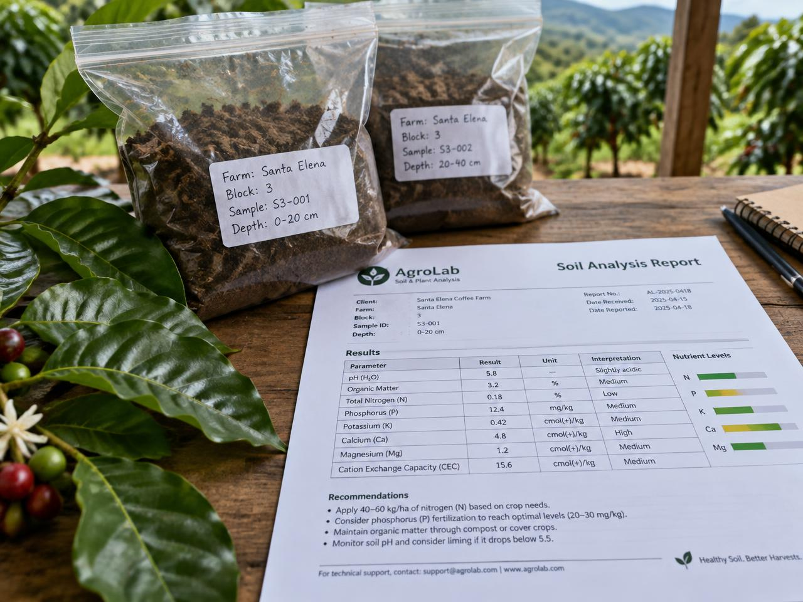

Passo 1
Envie o laudo
Pode ser o PDF que o laboratório mandou ou uma foto do papel.
Envie o laudo da análise de solo, em PDF ou foto. Você recebe um relatório simples, com palavras do dia a dia: o que está bom, o que falta e quais culturas combinam com a sua terra.
Passo a passo
Três passos, sem precisar entender de química do solo.
Passo 1
Pode ser o PDF que o laboratório mandou ou uma foto do papel.
Passo 2
O sistema lê o laudo e mostra o que encontrou. Você corrige se precisar.
Passo 3
Resumo, nutrientes, culturas compatíveis e o que fazer agora. Dá para salvar em PDF.

Chega de laudo confuso
Feito para quem planta
“Eu nunca entendia o laudo. Agora sei o que corrigir antes de plantar o milho.”